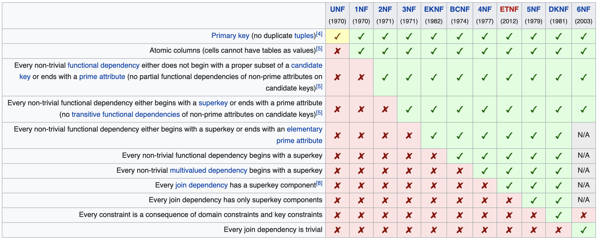

My personal notes for How to Fake a Database Design
Developers are generally bad at database design, even when they are great at SQL.
What does it mean to have a well-designed database?
- Generally normalized
- Denormalized only as necessary
- No data is duplicated
Rules for Designing Good Databases
-
Nouns == tables. A good place to start is by building your tables out from the nouns in the domain.
When determining if a noun should be a column within another table or a table by itself, consider if that noun belongs to that table. In other words, does the noun make sense when separated from the rest of the table? For example, it wouldn’t make sense to separate a
namecolumn from apeopletable because the name is completely tied to the person. However, it may make sense to separate anaddresscolumn from acustomerstable if the address can be considered in other contexts. -
Use foreign key constraints. If one table uses an ID from another table, it must use a foreign key constraint. These constraints help to maintain referential integrity, which prevents bad references. If you don’t use foreign key constraints, your data will inevitably end up inconsistent.
-
Lists of things get their own table. You can loosely define a list as something that can have zero, one or many elements (with exceptions).
-
Many-to-many relationships should use a lookup table. These relationships should use foreign key constraints.
-
Equality ≠ Identity. When we say no duplication, we mean not duplicating the identity of two things. It’s completely possible for two records to share the same data but to be unique instances. For example, you could have two records in a
peopletable that both have the nameJohn Smithbut still represent unique individuals.This rule can be summed up as: watch for equal values that aren’t identical.
-
Name columns as descriptively as possible. Names are very important in databases. Names should hint at their use. You should carefully consider the names of things. In a well-designed database, it should be hard to insert bad data.
He doesn’t like
idcolumns. He’d prefer<table>_id. I think this makes sense when you’re writing raw SQL, but it’s better to stick to the framework conventions when using an ORM. -
Avoid
nullvalues. Curtis definesnullas an unknown value and claims we shouldn’t use them most of the time.The first point I disagree with is his definition of
null. The common definition ofnullis not unknown—it’s nothing.I’m on the fence about this point. On one hand, he points out several situations where I think it’s good to avoid
nullvalues:- When
nullis used to represent an unknown value, then I agree with his point. In those cases, it definitely makes sense to avoid them. This is distinct from whennullis used to represent “nothing,” which is a perfectly valid time to usenull. Whennullis being used in place of another value as a special case, then two columns are probably more appropriate, or switching to anenumin the case of a flag. For example, usingnullto represent a one-time event in afrequencyinteger column might be tempting, but that’s not the same as “nothing.” - Rather than using
nullto indicate something is missing, it might be better to break those values out into a separate table. This applies especially when multiple columns, such as in an address, are tied together. In these cases, the existence or non-existence of a record is a better indicator if something has an address.
Curtis also lists query complexity as a reason for avoiding
null, but with an ORM like Rails, that complexity is abstracted away, so it’s not a concern.Finally, using other values, such as an empty string, to represent “nothing” is an anti-pattern. In these cases, you’re creating a “magic value” that’s not clear from the type of your column, which comes with its own downsides.
- When
Jargon
Curtis mentions several terms during his talk. While his talk isn’t about formal terminology, I thought it might still be helpful to note down some of the definitions.
-
Normalization: “[The] process of structuring a database, usually a relational database, in accordance with a series of so-called normal forms, in order to reduce data redundancy and improve data integrity.” (Wikipedia) This idea was first proposed by Edgar F. Codd as part of his relational model. A database is typically said to be normalized if it meets the third normal form (3NF).
-
Normal forms: These are a hierarchy of rules that can be applied to databases. Each rule adds a new constraint.

-
Data integrity: "Data integrity is the overall accuracy, completeness, and consistency of data. Data integrity also refers to the safety of data in regard to regulatory compliance — such as GDPR compliance — and security. It is maintained by a collection of processes, rules, and standards implemented during the design phase.” (Qlik)
-
Data definition language (DDL): “A syntax for creating and modifying database objects such as tables, indices, and users” (Wikipedia)
-
Surrogate key: An artificially generated key that uniquely identifies a row. This key should have no semantic relationships with the data in the record. An example might be a UUID. The primary advantage of using surrogate keys is that the identifier is insulated from changes to the data.
-
Natural key: A unique key tied to the data in a record. An example might be a zip code acting as a primary key to identify a mail delivery zone. These are also called business keys or domain keys.
-
Referential integrity: All of the references (via foreign keys) are valid. This ensures non-existent references can’t be created or updated and that records can’t be deleted while referenced elsewhere.